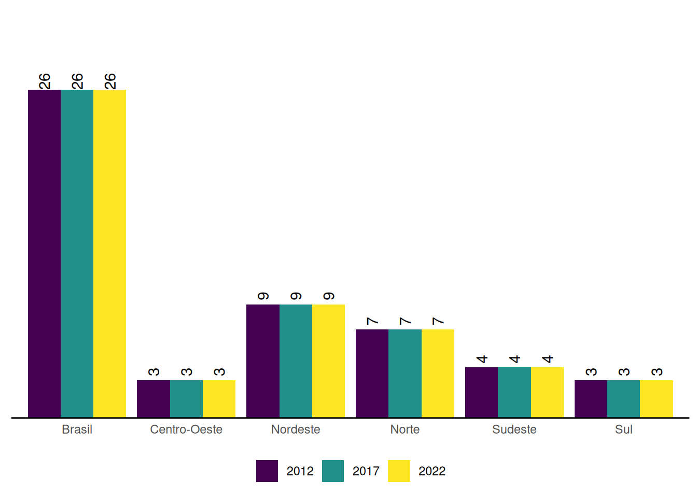
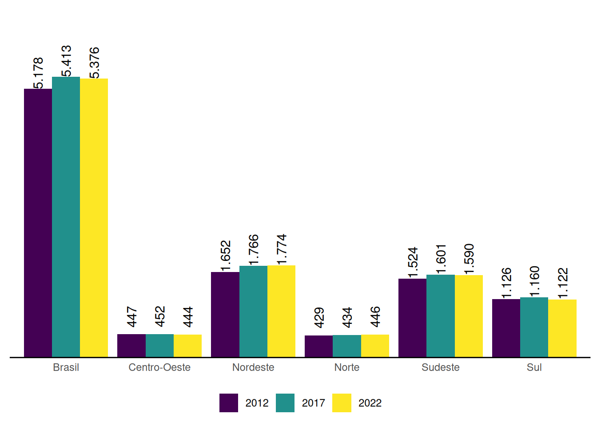
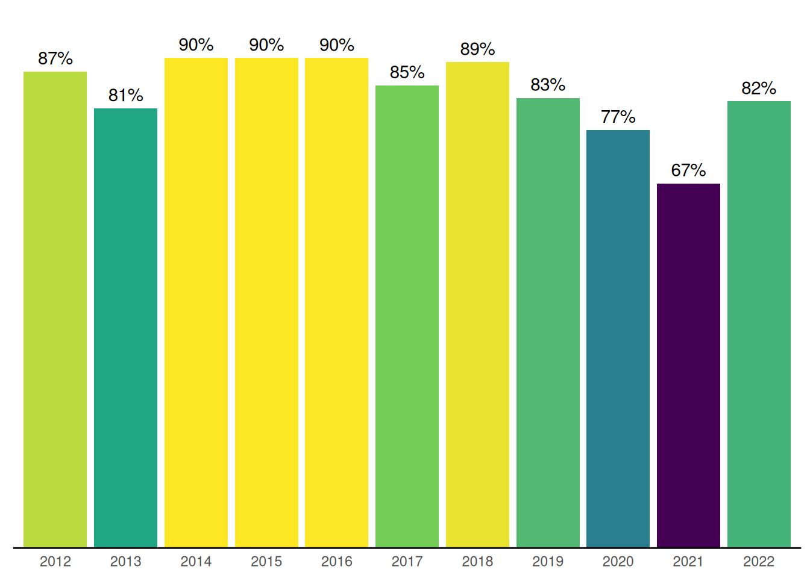
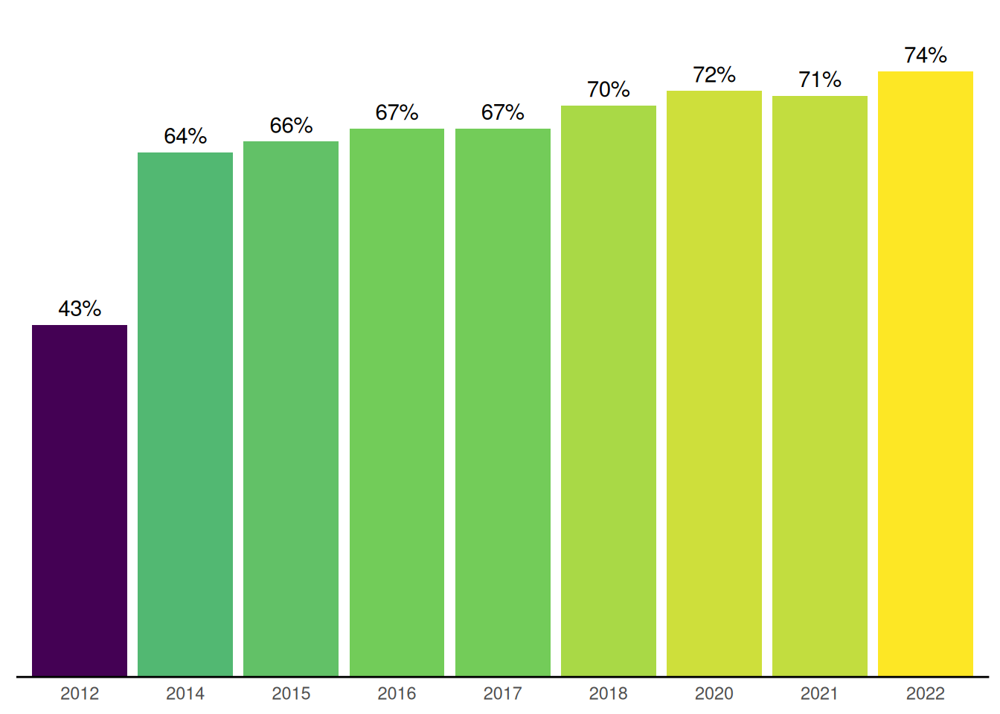

6 Participação e Controle Social no SUAS
A participação social é uma das diretrizes estabelecidas pela Constituição Federal de 1988 para a organização das ações da Assistência Social. Nesse sentido, a Lei Orgânica da Assistência Social (LOAS)1, que dispõe sobre a sua organização, instituiu em seu artigo 16 os Conselhos de Assistência Social em âmbito nacional, estadual e municipal como instâncias de deliberação colegiada do SUAS, cuja composição deve ser paritária entre governo e sociedade civil.
Os Conselhos integram o Sistema Único de Assistência Social (SUAS), juntamente com o governo e as entidades e organizações de Assistência Social. A Resolução do Conselho Nacional de Assistência Social (CNAS) nº 100/20242, estabelece a definição dos Conselhos de Assistência Social, suas competências, criação, estrutura e organização. Esta resolução também trata do desempenho dos conselheiros e conselheiras, bem como sua função de interesse público.
Outra resolução importante para organização do controle social no SUAS é a Resolução nº 99/20233 que caracteriza os usuários, seus direitos e participação na Política de Assistência Social.
Este capítulo apresenta os resultados apurados pelo Censo SUAS para os Conselhos Municipais e Estaduais de Assistência Social, considerando as dimensões de estrutura administrativa, dinâmica de funcionamento e composição.
No que se refere aos dados do Censo SUAS, o Gráfico 6.1 destaca os Conselhos Estaduais de Assistência Social. Observa-se que 100% dos conselhos responderam ao formulário do Censo SUAS.
Em relação aos Conselhos Municipais, o percentual de municípios que responderam ao Censo SUAS foi superior a 95% no ano de 2022. É importante pontuar que as variações no período analisado através do Gráfico 6.2 não significa necessariamente redução no número de municípios com conselhos, este número pode representar o número de conselhos que respondem ao formulario Censo SUAS que corresponde a 5.376.

6.1 Estrutura administrativa e dinâmica de funcionamento
Em relação aos Conselhos Estaduais, atualmente 100% informam possuir sede específica para funcionamento do controle social no SUAS conforme pode ser observado no Gráfico 6.3. A existência de sede para o funcionamento dos conselhos é essencial, pois além de garantir identidade na perspetiva de espaço na qual a população pode acessar, também assegura o trabalho da/o secretária/o executiva/o e demais profissionais. Dispor de locais de arquivos e documentos, reuniões entre outros.
No que se refere aos Conselhos Municipais de Assistência Social o Gráfico 6.4 destaca que 58,1% dos conselhos municipais que responderam Censo SUAS informam possuir sede para o funcionamento. Destaca-se que nos últimos 10 anos, teve aumento de 45,1% para 58,1 de municípios que possuem sede para conselho de Assistência Social, dado que representa aumento de 13 pontos percentuais.
Em relação aos Conselhos Estaduais, o Gráfico 6.5 sinaliza que a partir de 2017 identifica-se uma redução na presença secretarias executivas. Trata-se de profissional de apoio direto ao funcionamento dos conselhos com o objetivo de fornecer suporte e assessoria técnica no cumprimento das suas competências. De acordo com a Resolução CNAS Nº 100/2023 os conselhos deverão dispor deste profissional na qual estará subordinado à presidência e ao colegiado para assegurar suporte no cumprimento das suas competências.
No que se refere a presença de secretárias/os executivas/os - independente de ser exclusivo ou não - nos conselhos municipais, o Gráfico 6.6 sinaliza um aumento ao longo dos anos, avançando de 68% em 2013 para 82% em 2022.
Com a Resolução CNAS Nº 100/2023 reforça-se que para os municípios de Pequeno Porte I e II, a/o secretária/o executiva/o não precisa ser exclusiva/o. Entretanto, percebe-se que em relação aos municípios maiores, o percentual destes profissionais de forma exclusiva são baixos, sendo respectivamente 30% para de Médio Porte, 47% para os municípios de grande porte. As métropoles possuem 100% destes profissionais de forma exclusiva.
Em relação a dinâmica de funcionamento, o plenário deve, obrigatoriamente, funcionar uma vez ao mês e, extraordinariamente, sempre que necessário. Assim, destaca-se que 77% dos conselhos estaduais realizaram no último ano de 9 a 16 reuniões. O percentual de 3,8% (1 CEAS) realizou igual ou abaixo de 8 reuniões. Já 19,2% dos Conselhos Estaduais realizaram acima de 17 reuniões no ano de 2022, conforme mostra o Gráfico 6.7.
No tocante a realização de reuniões pelos Conselhos Municipais, o Gráfico 6.8 sinaliza que 42% dos CMAS realizaram menos de 8 reuniões no ano, sendo 14% deles inferior a 5 reuniões. A periodicidade mensal de reuniões deve estar prevista em regimento interno do respectivo conselho, conforme é sinalizado na Resolução CNAS nº 100/2023.
6.2 Uso do IGD para apoio ao controle social e instância de controle social do Programa Bolsa Família
Os recursos do IGD Bolsa Família e IGD SUAS podem ser usados para o fortalecimento das atividades e apoio técnico e operacional do controle social do SUAS. De acordo com as normativas do SUAS 4 os entes federados deverão aplicar pelo menos 3% (três por cento) desses recursos para fortalecer a instância de controle social do Programa Bolsa Família com a finalidade de garantir o fortalecimento do controle social e efetivar o apoio técnico e operacional a esse colegiado.
De acordo com o Gráfico 6.9, o Censo SUAS 2022 sinaliza que esse recursos é destinado a 100% dos CEAS. Observa-se ao longo dos anos essa destinação não é contínua, com destaque para os anos de 2012 e 2017 na qual apenas 85% dos conselhos estaduais receberam estes recursos.
Em relação ao destinação do IGD Bolsa Família e IGD SUAS aos Conselhos Municipais, o Gráfico 4.8 sinaliza que no Censo SUAS 2022 há 82% dos CMAS que informam receber este recurso. Os dados também variam na escala histórica conforme pode-se obserdo no Gráfico 6.10. O ano com maior proporção de CMAS que informaram receber recursos dos IGDs foi referente ao Censo SUAS 2017.
De acordo com Resolução CNAS 15/2014 5 o Conselho de Assistência Social é a Instância do Controle Social do Programa Bolsa Família (PBF) e deve atuar no acompanhamento do Cadastro Único, gestão de benefícios, condicionalidades, fiscalização e as oportunidades de desenvolvimento das capacidades das famílias desenvolvidas ou articuladas pelo município e os programas complementares.
No Censo SUAS de 2022, 88% dos conselhos estaduais informam ser a instância de controle social do Programa Bolsa Família. Esse percentual reduziu a partir de 2019 que encontrava-se com informações de 100% dos Conselhos Estaduais que eram instância de controle social do Programa Bolsa Família. O Gráfico 6.11 sinaliza essa informação histórica.

Em relação aos conselhos municipais ser a instância de controle social do Bolsa Família (ICS), observa-se que há resgitros do último Censo SUAS que 91% dos conselhos municipais são ICS. Esse dado dos últimos 10 anos está disponível no Gráfico 6.12. Observa-se que no ano de 2012, 92% dos CMAS informam ser a instância de controle social do Programa Bolsa Família, esse dado só avança a partir de 2018 e volta a reduzir a partir do Censo SUAS de 2021.
6.3 Deliberação sobre planejamento, orçamento e benefícios eventuais
A elaboração do Plano de Assistência Social é referenciado na LOAS (Lei Organica de Assistência Social) e NOB SUAS / 2012. É de responsabilidade do órgão gestor da Política de Assistência Social e deve ser apresentado ao conselho de assistência social para aprovação.
De acordo com o Gráfico 6.13, no Censo SUAS 2022, 65% dos Planos de Assistência Social foram debatidos pelo CEAS.6. Número que varia ano a ano. De acordo com a LOAS essa aprovação deve ser quadrienal, entretanto, recomenda-se que a cada atualização anual seja submetida ao respectivo conselho.
Em relação aos conselhos municipais, dados do Censo SUAS de 2022 sinaliza que 82% dos CMAS informaram debater sobre plano municipal de assistência social. O Gráfico 6.14 traz a referência destas informações a partir do Censo SUAS de 2012.7.

É papel do controle social o exercício democrático de acompanhar a gestão e avaliar a Política de Assistência Social. Assim, a aprovação do orçamento executivo ou Plano Plurianual de Assistência Social (PPA) deve ser exercida por esta instância. O Gráfico 6.15 mostra que, no Censo SUAS 2022, 69% dos conselhos estaduais deliberaram sobre a proposta orçamentária, dado que corresponde ao mesmo percentual de 2012.
O percentual de CMAS que aprovaram a proposta anual do orçamento corresponde a 74% no Censo SUAS de 2022. Este dado avançou significativamente em relação ao ano de 2012 como pode ser observado no Gráfico 6.16.

Os Benefícios Eventuais da Política de Assistência Social são de caráter suplementar e provisório. Devem ser ofertado aos cidadãos e as famílias em virtude de nascimento, morte, situações de vulnerabilidade temporária e calamidade pública. 8.
A concessão e o valor dos Benefícios Eventuais devem ser definidos pelos Municípios, Estados e Distrito Federal, com base em critérios e prazos estabelecidos pelos conselhos de Assistência Social. O Gráfico 6.17 sinaliza que o Censo SUAS de 2018 foi o que teve maior proporção de conselhos estaduais que aprovaram os critérios e prazos para acesso aos benefícios eventuais. O acompanhamento a partir de 2012 sinaliza um aumento de 31 pontos percentuais até este período, após isso há uma redução chegando no Censo SUAS de 2022 com 65% de aprovação pelos conselhos. 9.
Em relação aos Conselhos Municipais, destaca-se através do Gráfico 6.18 que 71% dos conselhos deliberam sobre critérios e prazos para acesso aos Benefícios Eventuais. Um progresso de 28 pontos nos últimos 10 anos.
6.5 Considerações Finais
O Controle Social no SUAS tem importante papel na gestão democrática e desenvolvimento de cidadania ativa na agenda da política de Assistência Social. Destaca-se para este capítulo importantes avanços nas prerrogativas legais, a saber das resoluções CNAS/MDS nº 99, DE 4 de Abril de 2023 e nº 100, de 20 de abril de 2023. Estas resoluções versam sobre aspectos de funcionamento dos conselhos, bem como participação, em especial de usuários. Os dados mostram que em relação a estrutura física, 100% dos conselhos estaduais possuem sede e local específico para funcionamento dos conselhos, no âmbito do controle municipal, os registros são de 58% com sede e local específicos para funcionamento. As secretárias executivas também se configuram em um papel essencial para funcionamento dos conselhos, no âmbito dos conselhos estaduais destaca-se que 92% possuem este profissional de forma exclusiva. Esse dado teve redução a partir de 2017 na qual dispunha de 100% dos conselhos estaduais com esse profissional. Para os municípios, 82% possuem secretarias executivas. Para os municípios, foram analisados a presença destes profissionais de forma exclusiva ou não, haja vista demarcação da resolução para pequenos municípios (Pequenos Portes I e II). Sobre a dinâmica de funcionamento, 96,2% dos conselhos estaduais realizaram no último ano, acima de 9 reuniões e, os conselhos municipais 58% dos conselhos realizaram acima de 9 reuniões no ano da apuração do Censo SUAS 2022. No tocante a recursos do IGD Bolsa Família e SUAS para controle social, historicamente este valor não é repassado em 100% dos conselhos, na escala de 10 anos (2012 a 2022), apenas 4 anos foram sinalizados por 100% dos conselhos estaduais enquanto recebimento deste recurso para funcionamento do controle social. No âmbito dos conselhos municipais, nos últimos 10 anos, não há histórico de 100% dos conselhos municipais receberem este recurso. Destaca-se que em 2022, 82% dos CMAS sinalizaram utilizar destes recursos para controle social. Em referência ao controle social do Programa Bolsa Família pelos conselhos, destaca-se que os CEAS informam que 88% possuem esta instancia e 91% dos conselhos municipais. Debates sobre o planejamento da Política de Assistência Social devem fazer parte das reuniões, 65% dos conselhos estaduais informam possuir esses dados. Em relação aos conselhos municipais, 82% informam debater. A proposta orçamentária também deve ser deliberada pelo controle social, entretanto, 69% dos CEAS e 74% dos CMAS informam deliberar sobre este assunto. Em relação a deliberação referente a oferta de Benefícios Eventuais, a oferta é baixa, com 65% dos CEAS no último ano, e os conselhos municipais, observa-se um avanço histórico nos CMAS. A representação e representatividade se destaca como um tema importante, para esta publicação, elencamos informações sobre as composições de usuários e de trabalhadoras/es dos conselhos estaduais e municipais.
Lei nº 8.742, de 7 de dezembro de 1993: Dispõe sobre a organização da Assistência Social e dá outras providências. (http://www.planalto.gov.br/ccivil_03/Leis/L8742compilado.htm)↩︎
A Resolução CNAS nº 100, de 20 de abril de 2023 revoga a Resolução CNAS nº 237, de 14 de dezembro de 2006.↩︎
Resolução CNAS/MDS nº 99, DE 4 de abril de 2023↩︎
Decreto nº 7.332/2010, de 19 de outubro de 2010↩︎
RESOLUÇÃO Nº 15, DE 5 DE JUNHO DE 2014↩︎
Até 2018 a pergunta é sobre a deliberação do Plano de Assistência Social pelo Conselho, a partir de 2018 a modalidade da pergunta é alterada e, passar a ser se o conselho debate sobre Plano de Assistência Social. Apesar da diferença mantemos a linha historica por considerar a temática do Plano um item essencial para o controle social↩︎
Até 2018 a pergunta é sobre a deliberação do Plano de Assistência Social pelo Conselho, a partir de 2018 a modalidade da pergunta é alterada e, passar a ser se o conselho debate sobre Plano de Assistência Social. Apesar da diferença mantemos a linha historica por considerar a temática do Plano um item essencial para o controle social↩︎
Os Benefícios Eventuais são assegurados pelo art. 22 da Lei Orgânica de Assistência Social↩︎
Para o ano de 2016 a pargunta foi alterada impossibilitante a analise histórica↩︎
gráfico a partir do ano de 2018 em decorrência do início da modalidade das perguntas no formulário do Censo SUAS↩︎
gráfico a partir do ano de 2018 em decorrência do início da modalidade das perguntas no formulário do Censo SUAS↩︎